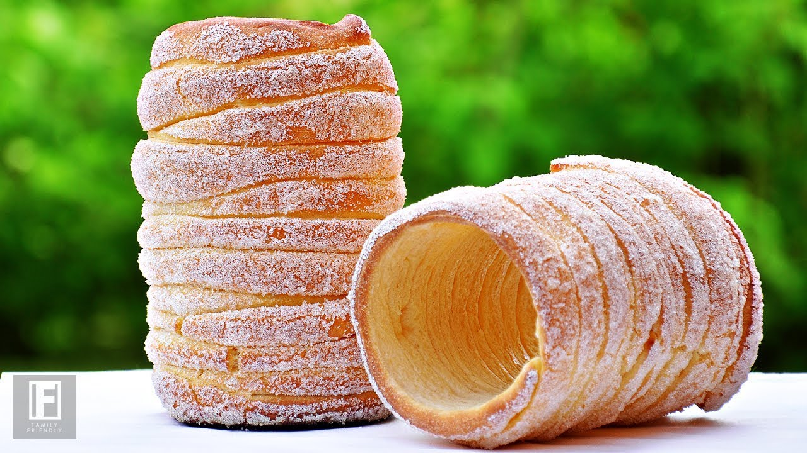

Kürtőskalács

Description
Kürtöskalács, a delectable pastry hailing from Hungary, has captured the attention of dessert enthusiasts worldwide. Also known as chimney cake, this traditional dessert is crafted by wrapping a strip of dough around a cylinder-shaped baking spit, then rolling it in sugar and roasting it over an open fire until it achieves a golden brown hue.
Boasting a crispy exterior and a soft, fluffy interior, Kürtöskalács is often infused with cinnamon or other aromatic spices, and can be served either plain or filled with a variety of sweet or savory ingredients.
Ingredients
- 1¾ cups 8½ oz (240 gm) all-purpose (plain) flour
- 2¼ teaspoons 1 packet (7 gm) active dry yeast OR 2 teaspoons instant yeast OR 14 gm (½ oz) fresh yeast
- 2 tablespoons 1 oz(30 gm) sugar
- ⅛ teaspoon ¾ gm salt
- 1 large egg
- 3 tablespoons 1½ oz (45 gm) melted butter
- ½ cup 120 ml milk, lukewarm temperature
- For brushing rolling pin: melted butter and sugar
- For toppings: Approximately ½ cup 3½ oz (100gm) sugar
- For walnut sugar topping: About 1 cup 4 oz (115 gm) ground walnuts, mixed with about ½ cup (3½ oz) (100 gm) sugar
- 2 teaspoons 10 ml (¼ oz) (6 gm) cinnamon
Steps
- If you are using active dry yeast, add ½ teaspoon sugar to lukewarm milk and set aside for 5-10 minutes until it proofs (becomes foamy).
- In a large bowl combine, flour, sugar and salt. To this add egg, milk, melted butter, and yeast Stir the mixture until it comes together to form a dough, and then knead for about five minutes.
- It will be sticky. Don't be tempted to add any flour. Grease your hand if needed.
- Transfer to a well greased container
- Allow the dough to rise for 60 minutes at room temperature until doubled in volume
- Prepare the rolling pins by covering them with aluminum foil, do at least two or three layers, to protect the pins from burning in the oven.
- Make sure to cover the rolling pins very well. Brush them with melted butter.
- The risen dough after 60 minutes.
- Punch down the dough and divide into 4 equal parts about 4 oz (115 gm) of each.
- On a well floured surface spread one portion of the dough
- Shape into ⅙ inch (4 mm) thick square-shaped sheet.
- Using a pizza cutter cut the dough into a long ribbons of about ½ inch (13 mm) wide.
- Wrap one end of the dough strip around the spit/rolling pin, tucking in the end so the dough doesn't unwind.
- eep the dough very thin (under ¼ inch (6 mm)) as you stretch and wind it on the rolling pun. Then roll the whole thing slightly on the counter top to flatten it/press it together.
- Brush with melted butter, roll in sugar
- Place in roasting pan and bake in a preheated moderately hot oven 375°F/190?C/gas mark 5 for 25 minutes.
- If using roast function (375 F/190 C) in the oven it will take about 20 minutes.
- If you are grilling (broiling) over the fire cooking time is about six minutes, until it starts to take on a dark golden color. Turn the rolling pin at once least once (or more) throughout baking time to ensure uniform cooking.
- When cake is done roll it in sugar again
- Tap the mold on a table top to release the cake and set it up right to cool.